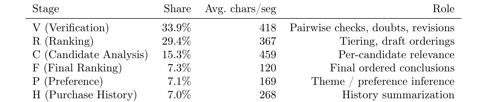
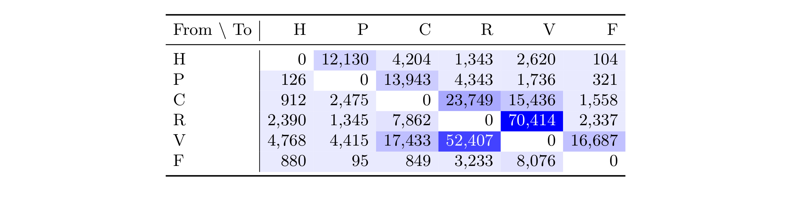
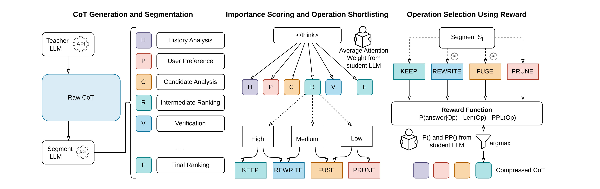
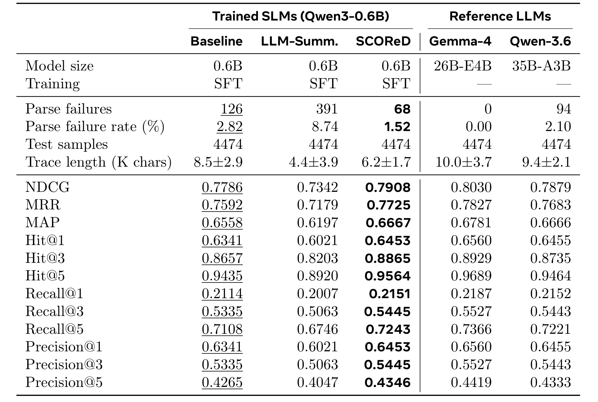
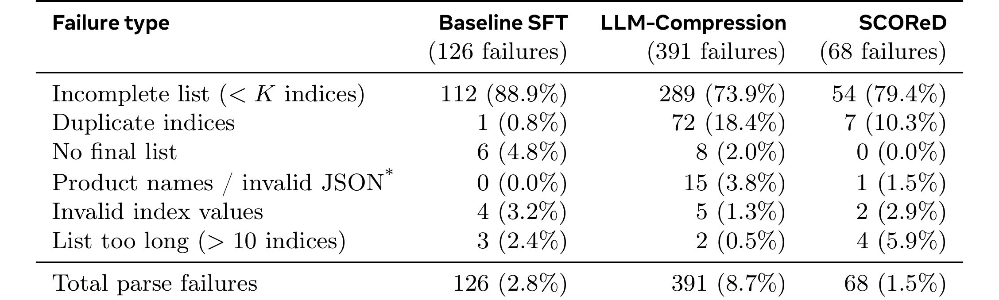
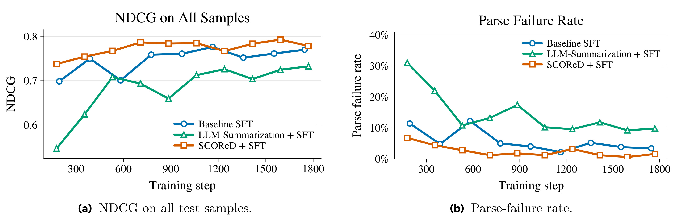
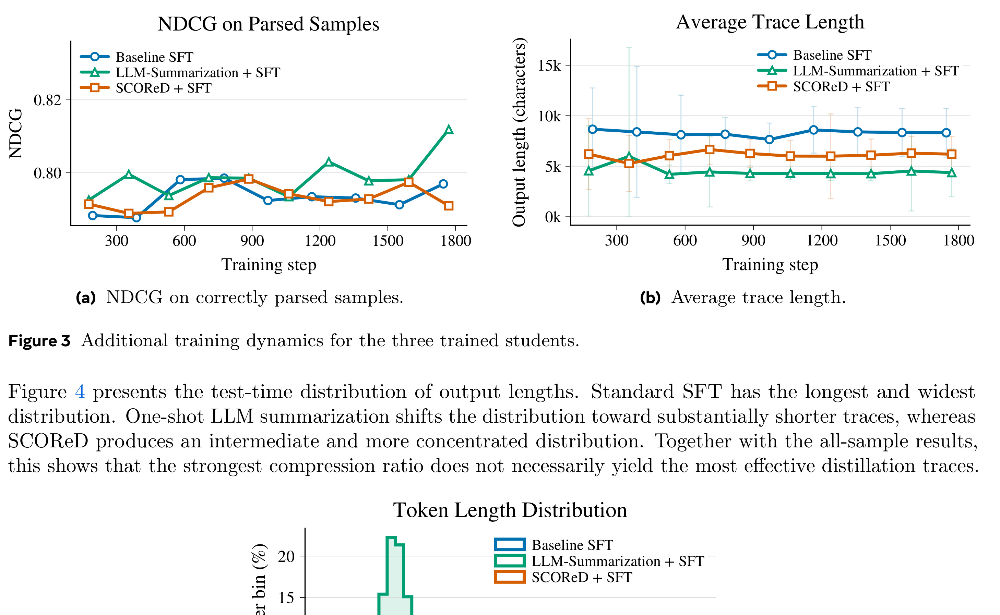
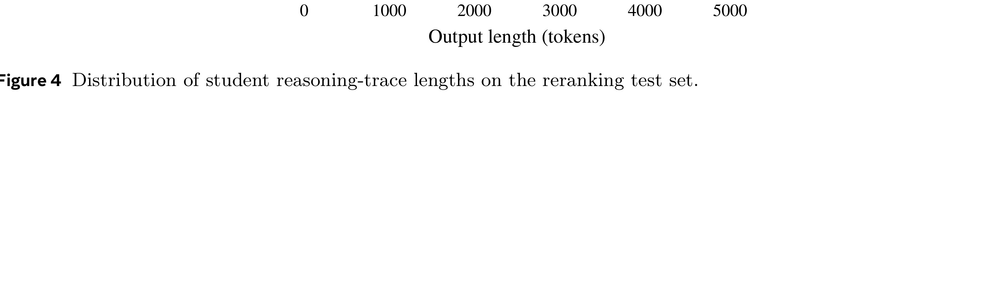
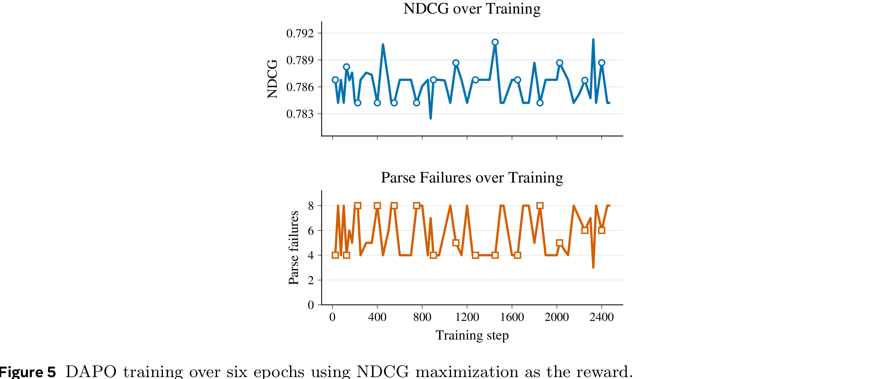
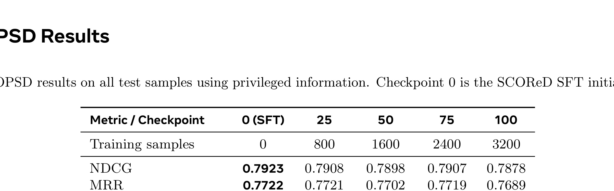

SCOReD: Student-Aware CoT Optimization for Recommendation Distillation 精读笔记
这篇论文来自 University of California Riverside，一作 Haz Sameen Shahgir，合作机构包括 Meta AI。论文入口为 arXiv:2607.05734，代码或项目页本轮未核验到独立公开链接。它讨论的是推荐场景里的 chain-of-thought distillation：大教师模型可以写出长推理轨迹，但这些轨迹不一定适合小学生模型学习，尤其在推荐任务中会包含大量重复验证、犹豫和几乎不改变最终答案的自我检查。SCOReD 的核心贡献，是把教师 CoT 先切成推荐语义段，再用学生模型自己的注意力、答案概率和困惑度去决定每段该保留、重写、融合还是剪掉。
推荐场景中的教师 CoT 并不是“越完整越好”的监督信号：用户行为标签本身有噪声、答案可能非唯一，大教师会反复检查同一个排序却很少真正修正；如果小模型直接模仿这些 raw traces，它学到的可能不是有效反思，而是冗长、重复、难以解析且偏离自身分布的推理习惯。
1. 背景和问题
推荐系统正在从“纯打分模型”逐渐吸收生成式与语言推理范式。传统召回、粗排、精排、重排链路通常把用户历史、候选物品和上下文压成 embedding 或特征，然后输出分数；生成式推荐则把推荐结果写成 token 序列，模型可以生成 item identifier、候选排序，甚至在 <think> 区域里显式比较用户兴趣和候选语义。OneRec、OneRec-Think、GR2 这类工作都在推动同一个方向：推荐模型不只要预测，还要能解释、比较、修正候选。问题是，真正上线的推荐模型常常受延迟、显存和吞吐约束，无法直接把大 reasoning LLM 当作重排器。因此，先用大教师生成推荐推理，再把推理能力蒸馏到小模型，是 generative recommendation 走向实际服务的必经步骤。
但推荐推理和数学、代码推理不同。数学题通常有相对清楚的推导链和唯一答案，代码题也可以通过单元测试判断是否正确；推荐标签来自用户行为，天然带噪声、曝光偏差和多解性。一个用户可能同时喜欢多个候选，历史行为也可能混有礼物、冲动购买、平台促销、价格敏感和短期兴趣。大教师面对这种任务时，往往不是沿着一条确定逻辑前进，而是在候选之间反复确认、重新排序、再确认。论文统计显示，raw teacher CoT 平均包含 $8.65\pm 4.17$ 个 verification stages；更关键的是，$92.89\%$ 的 individual refinement loops 不改变 proposed ranking。也就是说，很多“反思”只是把已经形成的排序换一种说法再确认一遍。

Table 1 是理解本文动机的第一张关键表。作者用 11,350 条训练 trace 标注出 289,541 个 segment，发现 Verification 占 $33.9\%$，Ranking 占 $29.4\%$，二者合计约 $63\%$。相比之下，Purchase History、Preference、Final Ranking 都只有约 $7\%$。这说明推荐 CoT 的冗余不只是长度问题，而是结构问题：真正表达用户历史和偏好建模的段落并不占主体，主体反而是“我再检查一下这个排序”“候选 3 和候选 5 是否应该交换”这类循环。若直接 SFT，小模型会把这种循环当成标准答案格式，学到长篇 verification habit，却未必学到如何更好地排序。

Table 2 进一步把问题变成状态转移：从 Ranking 到 Verification 的转移高达 70,414，Verification 到 Ranking 也有 52,407，Verification 到 Candidate Analysis 还有 17,433。这种 $R\rightarrow V\rightarrow R$ 或 $R\rightarrow V\rightarrow C\rightarrow R$ 循环，正是教师在推荐任务中“不确定但又不真正改变答案”的表现。作者还检查了 prompt length、purchase-history length、purchased-candidate textual overlap 等简单特征是否能预测 verification 数量，相关系数只有 $-0.08$、$-0.05$、$-0.11$。这意味着不能靠一个固定压缩比或简单启发式判断哪些推理多余，必须让压缩过程感知具体上下文和学生模型本身。
已有 CoT compression 方法给了本文直接参照。LLMLingua、C3oT、TokenSkip、Step Entropy、CRISP、Compress-Distill 都试图缩短推理轨迹，但它们大多把原始 reasoning trace 视为“正确而冗长”，目标是在尽量保持性能的前提下删掉低价值 token。推荐蒸馏的问题更尖锐：raw trace 本身可能不适合学生，甚至包含对学生有害的高困惑度表达、重复验证和教师风格的 out-of-distribution transition。若压缩器只追求短，可能删除学生需要的候选比较；若只追求保留信息，又会把冗余和不适配分布全部传给学生。SCOReD 的命名里 “Student-Aware” 很重要，它不是通用摘要器，而是把学生模型的 attention、answer likelihood 和 perplexity 都纳入压缩决策。
2. 方法
2.1 总览：三步把教师推理变成学生可学轨迹
SCOReD 包含三个阶段：第一，用 LLM 把教师 CoT 分割成推荐专用语义段；第二，用目标学生模型的 </think> attention 给每个 segment 打重要性分；第三，在每个 segment 上从 KEEP、REWRITE、FUSE、PRUNE 中选择动作，选择依据不是人类直觉，而是学生模型对最终答案的条件概率、编辑后文本长度和编辑后文本困惑度。

Figure 1 可以从左到右读。左侧 raw CoT 先被拆成 History Analysis、User Preference、Candidate Analysis、Intermediate Ranking、Verification、Final Ranking 六类段落；中间用学生模型单次 forward 得到从 </think> token 指向前文 segment token 的平均 attention，划分 High、Medium、Low 重要性；右侧再对每个 segment 选动作，高重要段只允许 KEEP 或 REWRITE，中重要段允许 REWRITE 或 FUSE，低重要段允许 FUSE 或 PRUNE。最后的 reward 同时包含 $P(\mathrm{answer}\mid \mathrm{Op})$、$\mathrm{Len}(\mathrm{Op})$ 和 $\mathrm{PPL}(\mathrm{Op})$。这个 pipeline 的设计直觉是：不要把 CoT compression 当作文本摘要，而要当作“为某个具体学生模型定制训练轨迹”。
这一点和 one-shot LLM summarization baseline 的差别很大。普通 summarizer 可以一次性读完整 trace，然后重写成更短版本；它看起来更便宜，也可能更像人类摘要。但 summarizer 不知道学生模型在哪些 segment 上真正依赖信息，不知道某个 rewrite 是否提高学生生成最终排序的概率，也不知道编辑后文本对学生来说是否高困惑。SCOReD 牺牲了一些处理成本，换来 segment-level、student-conditioned 的局部选择。对蒸馏任务而言，这种局部性有价值：训练数据不是给读者看的摘要，而是小模型要逐 token 学习的目标分布。
2.2 语义切分：先把推荐 CoT 拆成六类段落
第一步是生成教师推理轨迹。论文使用 Google Gemma-4-26B-A4B-it 作为 teacher LLM，在 Amazon Beauty Pretrain 构造的 reranking task 上生成 $K$ 个 rollout traces。最终输出必须是一个 Python-style list，包含所有候选编号并按偏好排序。作者没有要求教师按照固定模板写思考过程，因为已有工作显示 reasoning LLM 很难稳定控制 CoT 结构；因此，结构化推理不是 prompt-time 约束，而是 post-hoc extraction。
生成 raw traces 后，作者再用 Gemma-4-26B 做第二次标注，把每条 CoT 分成连续片段 $S_1,\ldots,S_n$，每段属于六类之一：H 表示 Purchase History Review，负责总结购买历史；P 表示 User Interest Modeling，负责从历史中抽象主题或偏好；C 表示 Candidate Analysis，逐个分析候选；R 表示 Intermediate Ranking，构造临时排序或 tier；V 表示 Verification，检查 close calls、表达疑问或修正；F 表示 Final Ranking，给出最终结论。标注 prompt 要求 segment 必须连续覆盖全部行、无重叠无缺口，并且高粒度切分。
这种 segmentation 的工程价值在于，它把原本混杂的长文本转成可以施加策略的单元。比如 H/P/C 往往包含用户兴趣和候选语义，是保留或重写的重点；R/V 既可能包含有用的 pairwise comparison，也可能是重复确认；F 通常短而靠近最终答案，不应被轻易删除。若没有 segment type，压缩器只能按 token saliency 或全局摘要，很难区分“低 attention 但结构上必要的 final list”和“高频出现但重复的 verification”。SCOReD 虽然不是直接把 stage label 写进 reward 公式，但这些 label 让后续 action 更有解释性，也让 paper_audit 中的问题诊断有可验证统计基础。
2.3 学生注意力：用结束标记判断哪些段落影响答案
第二步是 importance scoring。SCOReD 借鉴 CRISP 的观察：在 reasoning LLM 中，</think> 之后的 token 往往主要 attend 到这个 delimiter，而不是直接 attend 到整段前文；因此 </think> 可以被看作 CoT 的一种 learned summary representation。作者用目标学生模型，也就是预 SFT 的 Qwen3-0.6B，计算 </think> token 对每个 segment token 的 attention，然后对 segment 内 token 求平均，得到该 segment 的 importance score。
形式上，若第 $i$ 个 segment 为 $S_i$，它包含若干 token positions，</think> 对这些 positions 的 attention 权重可以记为 $A_{\tau,t}$，其中 $\tau$ 表示 CoT 结束 delimiter 的位置。segment score 可理解为：
论文正文没有把这个式子单独编号，但这个平均 attention 是方法的核心信号。它和普通 token-level pruning 不同：SCOReD 的决策单位是 segment，因此不会把一段候选分析剪成碎片；同时它使用的是学生模型，而不是教师模型或外部 compressor。如果学生已经能从某段历史总结中获得足够信号，这段就可能高分；如果教师写了一堆自己风格的重复 verification，学生的 </think> attention 未必认为它们对最终答案有帮助。
根据 score，作者把 segments 分成 Low、Medium、High 三个 bucket。实现里 $f_{low}=f_{high}=10\%$：bottom $10\%$ 是 Low，top $10\%$ 是 High，其余是 Medium。这个阈值选择体现了保守策略：只有最不重要的一小部分段落进入可 PRUNE 区域，只有最重要的一小部分段落禁止 FUSE/PRUNE。它避免了 aggressive compression 直接删除关键 candidate comparison，也避免所有段落都被 rewrite 成统一风格，保留了对不同信息密度的差异化处理。
2.4 编辑动作：按重要性选择保留、重写、融合或剪枝
SCOReD 的第三步不是直接按 importance score 删除段落，而是先为每个 bucket 限定 action set。High segments 可以 KEEP 或 REWRITE，Medium segments 可以 REWRITE 或 FUSE，Low segments 可以 FUSE 或 PRUNE。这个约束非常关键，因为它把“重要性”和“可编辑方式”分开：高重要段未必原文最好，所以允许 REWRITE；低重要段未必完全无用，所以允许和邻近段 FUSE；中等段则不轻易删除，而是在改写和融合之间选择。
KEEP 是最保守的动作，适合信息密度高、学生能理解且已接近学生分布的 segment。REWRITE 由 LLM 重写 segment，目标是保留语义但改善表达、减少重复或降低学生 perplexity。FUSE 将相邻内容合并，适合多个 verification 或 ranking 段落反复表达同一比较时，把它们压成一个更紧凑的说明。PRUNE 则删除段落，主要用于低重要且冗余的重复检查。这里的动作设计比纯 token deletion 更贴近推荐 CoT 的病灶：问题不是某几个 token 多余，而是一整段 verification loop 可能只是在重述先前排序。
one-shot summarization baseline 也会做合并和删除，但它的决策来自 summarizer 的语言判断。SCOReD 则把动作候选放回学生模型评估：某段 rewrite 是否真的更好，不看它是否更像人写的摘要，而看它是否提高学生在当前上下文下生成 teacher final answer 的 log probability，同时不要太长，也不要让学生觉得困惑。这种局部编辑顺序还让 $C_i=(\mathrm{prompt},S_{1:i-1})$ 成为动态上下文：前面已经处理过的 segments 会影响后续编辑的收益，压缩不是独立逐段打分，而是沿 CoT 从左到右构造 student-friendly trajectory。
2.5 奖励选择：在答案概率、长度和困惑度之间取舍
对每个 segment $S_i$ 和可行动作 $a\in A_i$，设编辑后的片段为 $\tilde S_i^a=a(S_i)$，前置上下文为 $C_i=(\mathrm{prompt},S_{1:i-1})$。SCOReD 用如下 reward 评估候选编辑：
符号解释：$C_i$ 表示 prompt 与已处理前缀，$\tilde S_i^a$ 表示动作 $a$ 后的候选编辑段，$\alpha$ 和 $\beta$ 分别是长度惩罚和困惑度惩罚权重。第一项 $\log P(\mathrm{answer}\mid C_i,\tilde S_i^a)$ 是学生模型在看到 prompt、前面已处理片段和当前候选编辑后，对教师最终 ranking answer 的条件 log probability。它衡量这个编辑是否真的帮助学生走向目标答案。第二项 $\mathrm{Len}(\tilde S_i^a)$ 惩罚过长片段，避免 KEEP 或 verbose rewrite 把冗余带回训练目标。第三项 $\mathrm{PPL}(\tilde S_i^a\mid C_i)$ 惩罚学生难以建模的表达，防止 compressor 生成对大模型流畅、对小学生分布外的文本。实现中作者设置 $\alpha=0.005$、$\beta=0.1$。
最终动作选择为：
这个式子看起来简单，但它把推荐蒸馏中的三个目标放在同一个尺度里：任务正确性、推理效率、学生可学习性。若只最大化答案概率，模型可能保留很长的 candidate analysis；若只惩罚长度，就会走向 LLM summarization 那种更短但更难解析的目标；若只惩罚 perplexity，又可能偏向学生已经熟悉的泛泛表达，损失候选区分信息。SCOReD 的核心主张正是：有效的 CoT optimization 不能只做 compression，必须让 compressed CoT 同时 support answer prediction、stay concise 和 remain in-distribution for the student。
到这里，SCOReD 主体方法已经完整：它先把教师推理变成可操作的语义段，再让学生模型参与重要性判断，最后用答案概率、长度和困惑度共同选择编辑动作。后面的 DAPO 与 OPSD 不是 SCOReD 压缩器本身，而是作者为了验证“更干净的 SFT 监督之后，后训练还能否继续带来增益”而设计的实验对照，因此放到实验章节解读更清楚。
3. 实验结果
3.1 主结果：更准、更短、解析失败更少
实验数据来自 Amazon Beauty Pretrain。作者过滤掉少于 5 个 item 的样本，把日志最后 3 个 item 作为 ground truth，用前面的历史预测；再随机采样 7 个负候选，使每个样本都有 $K_{candidate}=10$。数据按 60:20:20 切分，得到 13,417 train、4,472 validation、4,474 test；LLM segmentation 后最终训练集为 11,350。teacher 是 Gemma-4-26B-A4B-it，student 是 Qwen3-0.6B；SFT 使用全参数 finetuning，10 epochs early stopping，最佳学习率为 $3\times10^{-5}$。

Table 3 是最核心的结果。SCOReD 在所有 trained 0.6B students 中排名第一：NDCG 从 baseline SFT 的 0.7786 提升到 0.7908，MRR 从 0.7592 到 0.7725，MAP 从 0.6558 到 0.6667，Recall@5 从 0.7108 到 0.7243。按论文摘要口径，SCOReD 相对 baseline SFT 提升 1.56% NDCG 和 1.9% Recall@5，同时把平均 trace length 从 8.5K 字符降到 6.2K，减少 27.3%。这很重要，因为它不是常见的“压缩带来效率但损失精度”，而是在推荐蒸馏场景中第一次展示了 optimized CoT 可以超过 raw CoT。
更有意思的是格式可靠性。Baseline SFT 有 126 个 parse failures，parse failure rate 2.82%；LLM-Summarization + SFT 压缩最激进，trace length 只有 4.4K，但 parse failures 飙到 391，failure rate 8.74%，NDCG 也降到 0.7342；SCOReD 只有 68 个 parse failures，failure rate 1.52%。这说明推荐蒸馏里的目标不是越短越好。one-shot summarization 可能删掉了看似重复、实则帮助学生维持输出格式的局部结构，或者生成了对学生更分布外的压缩文本。SCOReD 保留 6.2K 而不是 4.4K，反而在答案质量和合法输出上更稳。
还可以把 SCOReD 和 reference LLMs 对比。Gemma-4-26B teacher 的 NDCG 为 0.8030，Qwen-3.6-35B-A3B 为 0.7879；SCOReD 训练出的 0.6B student 达到 0.7908，超过 35B Qwen reference，并接近 teacher。这个结果不应被解读为小模型普遍强于大模型，而应理解为：在一个窄域 reranking task 中，经过任务数据和 student-aware CoT 优化后，小模型可以获得非常针对性的格式与排序能力。对工程落地来说，这比直接调用大 LLM 更现实，也更符合推荐系统的服务约束。
3.2 格式可靠性：为什么最短摘要反而更差

Table 4 解释了 LLM summarization 为什么看似高效却表现差。三种学生模型的主要失败都是 incomplete list，即最终 ranking 少于要求的 $K$ 个 indices；baseline 中 112/126 个失败属于这一类，SCOReD 中 54/68 个失败也属于这一类。但 LLM-Compression 多了一个特别明显的问题：duplicate indices 占 72/391，也就是 18.4%，远高于 baseline 的 0.8% 和 SCOReD 的 10.3%。此外，LLM-Compression 还会输出 product names / invalid JSON 这类格式错误。换句话说，过度压缩会破坏学生对“必须输出每个候选编号且只输出一次”的格式约束。
这给推荐蒸馏一个实际警告：排序任务中的 CoT 不只是解释文本，它还隐含着对 output schema 的维持。某些 intermediate ranking 或 verification 看起来重复，但可能不断强化候选全集、编号集合和最终 list 格式。若 summarizer 为了短而删除这些结构性提示，小模型就更容易漏掉候选、重复候选或输出自然语言名称。SCOReD 通过 answer probability 和 PPL 评估每个编辑，间接保护了这种 schema adherence。

Figure 2 从训练过程佐证同一点。左图 all-sample NDCG 中，SCOReD + SFT 整体高于 baseline 和 LLM-Summarization；右图 parse failure rate 中，LLM-Summarization 虽然随训练下降，但始终显著高于另外两条曲线。由于 all-sample NDCG 对 malformed outputs 记零，格式失败会直接拉低排序指标。SCOReD 的优势不是某个 checkpoint 偶然好，而是在训练过程中持续提供更干净、更稳定的监督。图中右侧尤其说明，LLM summarization 虽然在后期也能下降，但从高失败率出发，说明早期训练已经被破坏格式的目标牵引；SCOReD 则从一开始就更接近可部署输出。

Figure 3 把 malformed outputs 排除后再看 correctly parsed subset。此时三种学生的 NDCG 更接近，说明主结果中很大一部分差距来自 output-format reliability，而不是排序偏好本身完全不同。右侧 trace length 曲线显示，LLM-Summarization 一直最短，baseline 最长，SCOReD 居中。这个“居中”是本文想要的结果：SCOReD 不追求最短，而追求让学生能学、能解析、还能保留关键候选比较。对线上 reranking 模型来说，输出合法性和 latency 一样重要；一个短但经常漏候选的 reasoning target，训练成本再低也不可用。

Figure 4 展示测试时输出长度分布。Standard SFT 最长且分布更宽，说明 raw teacher trace 会把学生推向冗长输出；LLM summarization 明显左移，短得多；SCOReD 位于两者之间且更集中。这个分布很好地解释了为什么 SCOReD 可以同时减少长度和提升性能：它删掉的是重复 verification 和学生难学的表达，而不是把所有推理都压成摘要。实际部署时，这种长度集中也有工程价值，因为推理 latency、显存占用和输出截断风险都会更可控。更重要的是，分布不是单纯左移，而是避免了 raw SFT 的长尾和 summarization 的过短目标，说明压缩策略在“足够信息”和“可控成本”之间保持了中间带。
3.3 后训练实验：DAPO 和 OPSD 没有带来稳定增益
论文进一步测试 DAPO 和 OPSD，是为了回答一个自然问题：既然推荐任务最终看 NDCG/Recall，能不能在 SCOReD SFT 之后继续用 RL 或 on-policy distillation 拉高指标？结果比较保守：两者都没有稳定超过 SFT 初始化。
DAPO 使用 sequence-level ranking reward。给定 recommendation prompt $x$，从当前 policy 采样一组回答 $y_1,\ldots,y_G\sim\pi_\theta(\cdot\mid x)$，解析最终 ranking，并计算：
若输出不是合法 ranking，就直接得零分。这让 DAPO 可以直接优化非可微排序指标，也把格式可靠性纳入 reward。作者从 SCOReD SFT policy 初始化 policy 和 reference model，用 LoRA 训练以限制偏移。
OPSD 则处理另一个问题：标准 on-policy distillation 需要一个更强且 vocab-compatible 的 teacher。Gemma-4-26B 任务能力强但与 Qwen 学生词表不兼容，Qwen-3.6-35B-A3B 词表兼容但在这个任务上不稳定强于学生。因此作者用 privileged information 构造自蒸馏：学生只看原始 prompt，教师分支额外看到由 ground-truth items 构造的 privileged reference ranking $\tilde y^*$。两者在学生自己采样出的 prefix 上比较 token distribution：
这里 $D$ 是 token distribution divergence，$\mathrm{sg}$ 表示 stop-gradient。OPSD 的优势是 dense token-level guidance，DAPO 的优势是直接对齐 ranking reward；作者把它们都作为 SCOReD SFT 之后的补充实验，检验“更干净的 CoT 蒸馏”是否已经吃掉了主要收益。

Figure 5 显示 DAPO 在六个 epoch 内 NDCG 只在窄范围内震荡，parse failures 也没有持续下降。作者的解释是，SCOReD SFT student 已经接近 Gemma-4-26B teacher，可改进空间小；同时 reranking reward 可能稀疏或低方差，多个 sampled rankings 得到相近 NDCG，relative advantage 信号弱。这个现象对推荐 RL 很常见：如果 reward 只在最终序列层面给一个分数，且候选排序差异不大，策略很难获得足够细的梯度方向；如果再加上合法 list 约束，探索空间就更难。图中 NDCG 和 parse failure 都没有单调改善，说明直接把排序 reward 接在 SCOReD SFT 后面，至少在这个任务上不是主要增益来源。

Table 6 则显示 OPSD 的 checkpoint 0，也就是 SCOReD SFT 初始化，在 NDCG、MRR、MAP、Recall@3、Recall@5 和 parse failure rate 上都是最好或最稳。后续 checkpoint 在个别 Hit@k 上有小幅波动，但没有形成系统提升。原因可能有两层：第一，privileged reference ranking 是把 ground-truth items 稳定移到 teacher ranking 前面，它提供的是一种构造性监督，不一定等价于真实用户完整偏好顺序；第二，学生已经从 SCOReD CoT 学到了主要格式和候选比较能力，OPSD 的 dense token guidance 反而可能让模型偏离已校准的输出分布。
因此，本文不是说 RL 或 on-policy distillation 对推荐无用，而是说明在这个设置下，监督数据质量是第一瓶颈；当 SFT target 还包含大量教师冗余和学生分布外表达时，先优化 CoT 轨迹比直接上 RL 更有效。后训练要继续提升，可能需要更强的 reward 设计，例如覆盖多解推荐、候选全集合法性、排序多样性、探索价值或 session-level utility，而不仅是对最终 list 算 NDCG。
3.4 综合判断：价值在学生感知而不是压缩率
把 Table 3、Table 4 和 Figure 2-4 放在一起，最清楚的结论是：SCOReD 的价值不是把 CoT 变短，而是把教师轨迹变成学生能学习的监督信号。Raw trace 的问题是冗长、重复、把教师不确定性传给学生；one-shot summarization 的问题是短但忽略学生分布，容易破坏输出格式；SCOReD 在两者之间找到一个 task-aware / student-aware 的折中。
从推荐系统角度看，这个折中尤其重要。推荐 reranking 的最终答案不是一个开放式解释，而是一个完整、无重复、长度正确的候选编号列表。推理文本如果丢掉候选覆盖、pairwise comparison 或 final ranking consistency，学生在训练时就会学到错误 schema。SCOReD 用 $\log P(\mathrm{answer}\mid C_i,\tilde S_i^a)$ 把编辑动作和最终答案绑定，用 $\mathrm{Len}$ 控制成本，用 $\mathrm{PPL}$ 约束学生可学习性，因此它能删除 teacher 的重复 verification，又不会像普通摘要器那样只看人类可读性。
论文的限制也应当放在这里读。第一，实验只在 Amazon Beauty reranking 上做，候选数固定为 10，真实短视频、电商广告或内容流重排的候选规模、上下文特征和线上约束更复杂。第二，segmentation、REWRITE、FUSE 都依赖 Gemma-4-26B，生成成本和标注质量会影响实际流水线。第三，attention from </think> 是一个合理 proxy，但不是因果证明；高 attention 不必然等于保留该段会提升排序，低 attention 也可能遗漏某些必要格式线索。第四，reward 权重 $\alpha,\beta$ 和 $10\%$ importance threshold 需要跨域验证，未必对所有推荐场景最优。
4. 总结
我的判断是，SCOReD 最值得保留的观点不是“又提出了一个 CoT 压缩方法”，而是把推荐蒸馏里的 supervision quality 问题讲清楚了。推荐 CoT 的 raw teacher traces 不是天然黄金标准：它们包含大量由用户行为噪声、多解性和教师不确定性诱发的重复验证。直接模仿这些 trace，会让小模型学到 verbose and rarely-revising behavior；过度摘要又会破坏候选列表格式和学生可学习性。SCOReD 把压缩动作放到学生模型视角下评估，因而更接近“为部署模型定制训练数据”。
工程启发有三点。第一，如果要在推荐里蒸馏 reasoning traces，应该先审计 trace 结构，而不是直接 SFT：统计 H/P/C/R/V/F 这类阶段占比、重复 verification 次数、final answer 是否真的被 revision 改变，能帮助判断 teacher CoT 是否有害。第二，压缩或清洗 CoT 时要把学生模型纳入 loop。对一个 0.6B 学生有用的表达，不一定是 26B teacher 最自然的表达；对人类读者漂亮的摘要，也不一定让学生更容易输出合法排序。第三，格式可靠性必须作为推荐 reasoning 蒸馏的一等指标。Parse failure、duplicate indices、incomplete list 这类错误不只是工程后处理问题，它们会直接反映训练目标是否保留了足够 schema signal。
局限和风险也很明确。SCOReD 的 pipeline 包含二次 LLM segmentation、可能的 rewrite/fuse 生成、逐动作学生打分，离线数据处理成本不低；如果训练数据规模扩大到千万级 trace，需要采样、缓存或更轻量的 segment scorer。attention-based importance 也可能受模型架构和 tokenizer 影响，跨学生模型迁移不一定稳定。更重要的是，本文优化的是 reranking CoT distillation，不直接解决召回、曝光偏差、长期兴趣漂移和线上 exploration 问题；若把它用于生产，还需要和候选生成、日志校正、reward 设计和安全约束结合。
后续值得跟进三条线。第一，把 SCOReD 这类 student-aware trace optimization 扩展到更大候选集和真实多模态内容推荐，观察 segment importance 是否仍主要集中在 candidate comparison 和 final ranking。第二，把 action selection 与 online/offline reward 结合，不只看 teacher final answer likelihood，也看覆盖、多样性、长尾和业务约束。第三，研究更便宜的 proxy，例如用小模型 hidden states、token entropy 或 lightweight verifier 近似 reward，降低每段多动作评估成本。若这些问题能解决，SCOReD 的思想可以成为推荐 reasoning distillation 的通用数据清洗层：先让教师生成，再让学生决定哪些推理值得学、该用什么形式学。
一句话概括：SCOReD 证明，在推荐蒸馏中，CoT 的质量不等于长度或教师能力，而取决于它是否让目标学生模型更容易学会正确、简洁且格式可靠的排序推理。